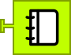
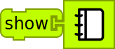

Displaying an Image and Saving
Follow the step-by-step instructions below and refer to the illustration on the next page.
- Return to Turtle Blocks via the frame
- If your blocks are hidden, press the show blocks icon

- Click the Media-Palette icon

- Drag a Journal block  to the right of the show block, overwriting the text variable 
- Click the Journal block and select a picture
- Clear your canvas by pressing the eraser icon

- Press the snail and watch your turtle draw a green square, and then display the image you picked!
- Stop Turtle Blocks and return to the Learn Sugar activity.